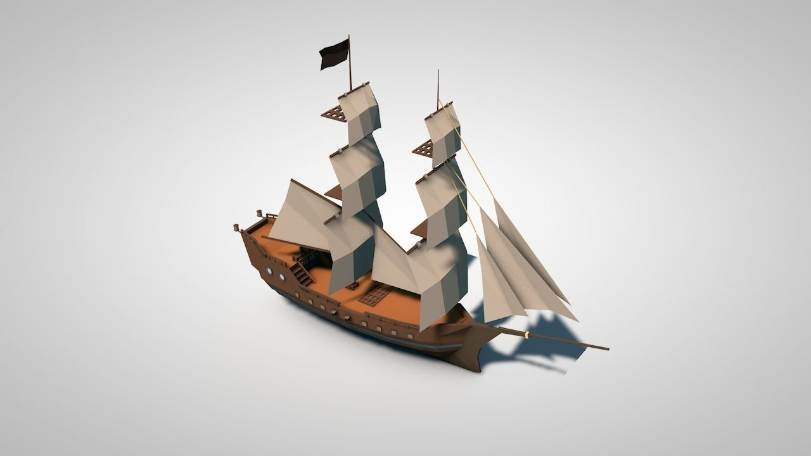

New Ship in the works
This week centered around a restructuring of our project, moving beyond our initial prototype. Previously, we had used a free ship asset as a placeholder for the ship which would be in our final application. Now that we have a MVP working, it was a good time to find and switch to a new ship. We did some research on some ships that fit our criteria, comparing aethstetics, polycount, and the model’s inclusion of interactable parts, and narrowed down the choices through voting. Ultimately, we picked this one for its low poly design, while having enough for us to work with.
Modeling our own Interactive Parts
Because the model we settled on is missing some parts found on full-rigged ships, we had to take this up ourselves to model them. We identified four crucial pieces missing to the model we selected: an anchor, a crank to lift the anchor, rigging for climbing up the masts, and side braces for pulling the sails in either direction. For the first two parts, we turned to Autodesk Maya, learning some basic 3d modeling to create them. It turns out Maya has a handy feature which can export directly into a Unity project.

After importing these models into Unity, we wrote a script that adds intractability between the player and the crank, which would then lower/raise the anchor.
As for the rigging and the braces, they are made of rope, so modeling these may be a bit more difficult. We are considering between implementing it with a line renderer in Unity, where we will need to program its physics with hinge joints, or simply making a static rope model, foregoing physics altogether.
As the World refuses to turn
We understood that there would be limitations on the size of the world and the complexity of the physics involved. We have come across a limitation in being able to have localized physics on the boat relative to the VR players, meaning that when the ship is given a rigidbody and made to move within the world, the ship and all objects aboard move in sync, but the players slide off the deck of the ship. The players will react to physics relative to the scene rather than the ship, the ship is moving in reference to the scene, so the ship moves and the players do not. Another approach was to have the world move around the ship. With this method we have run into an issue with how we are currently representing the “land” as an actual terrain object in Unity. The Unity terrain engine does not allow for the rotation of terrain objects, and according to several resources, the performance we attained through moving the terrain object laterally was already something that is not recommended to implement. The limitations on manipulating a terrain object within Unity is an internal optimization on Unity’s end. This would leave us to have a hybrid solution of rotating the ship only, but much like when the ship has a rigid body, the players will not move with the ship as they are reacting to the physics scene outside of the ship. In order to move forward with the project we will have to create land assets that are not terrain and move them around the ship.
Towards Demo Day
We took some time to step aside and think about the final demo we want to present. We settled on a concept where users are tasked with delivering goods from island to island. We hope that these short tasks will provide a fun experience while learning about sailing a full-rigged ship. Brainstorming about what our final demo should look like helped us identify the tasks we need to complete and our next steps.
- Work Log -
Everyone: Discussed and voted on a new ship model. Drafted a narrative for our demo.
James: Attempted to work current land assets to rotate around the ship unsuccessfully. Looked into alternative ways to have a ship that moves around the water while VR players can roam the ship.
Patrick: Researched potential ship models. Modeled custom assets in Maya and imported them into Unity. Added interactions for the crank and anchor.
Abhinav: Researched and purchased new ship asset.
Julian: Looked for potential issues with photon syncing between players and their player models. Looked into ship assets with others.
- Work Plan -
Everyone: Re-research assets and pick ones for the project going forwards, rebuild ship frontend using new assets and migrate backend
James: Take new environment assets and create a system that is not a terrain object to use for the environment in order to rotate the world around the boat.
Patrick: Work on modeling ropes for rigging and braces, then add interactions for raising/lowering sails, as well as pulling the sails in either direction.
Abhinav: Look into sound effects for ocean, ship, object collisions, etc. Also look into how to enable in-game voice chat with PUN
Julian: Solve issue with network model positions. Include network scripts for interactive assets that Patrick gets working, and same for the ship once James figures out ship movement. While they’re still working on those interactions, possibly help with object interaction scripts. Look into including voice chat between players with Abhinav.